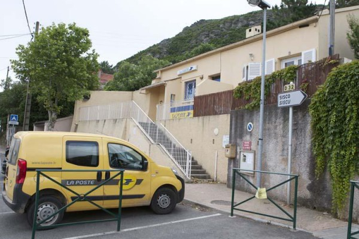

BUREAU DE POSTE
Lieu-dit Cuticcio 20233 — Marine de Sisco
Envoi, distribution de courrier et de colis, guichet.

Attention : Pas de distributeur automatique de billets
Horaires
| Jour | Matin | Après-midi |
| Lundi : | 08h20 – 12h00 | 13h30 – 15h45 |
| Mardi : | 08h20 – 12h00 | 13h30 – 15h45 |
| Mercredi : | 08h20 – 12h00 | FERMÉ |
| Jeudi : | 08h20 – 12h00 | 13h30 – 15h45 |
| Vendredi : | 08h20 – 12h00 | 13h30 – 15h45 |
| Samedi : | 08h20 – 12h00 | FERMÉ |
| Dimanche : | FERMÉ | |
CCAS
Les membres du Centre Communal d'A...
Les membres du Centre Communal d'Action Sociale se rendent disponibles, sur rendez-vous en contactant l’accueil de la mairie au 04 95 35 20 01.
Bibliothèque
Horaires et emplacement
Emplacement :
Rez de jardin de la mairie de SiscoHoraires
| Lundi au Vendredi: | Sur demande au : | 06.50.87.54.10 |
| Samedi: | 09h00-11h30 | Fermé l'après-midi |
| Dimanche : | FERMÉ |
Note: Une permanence est assurée le jeudi après-midi lors des rencontres organisées par le CCAS à la salle des fêtes de la Marine